Renaissance
Paper 1: Medicine Through Time with the Western Front
Course Textbook
Enquiry: How has medicine changed from c1250 to the modern day?
Contents
|
Lesson 1: KT2.1: The New Spirit of Enquiry: Humanism, The Printing Press & The Royal Society (c1500–c1700)
|
|
|
Lesson 2: KT2.2: Thomas Sydenham & The Art of Bedside Observation (1676)
|
|
|
Lesson 3: KT2.3: Andreas Vesalius & The Anatomical Revolution (1543)
|
|
|
Lesson 4: KT2.4: William Harvey & The Circulation of the Blood (1628)
|
|
|
Lesson 5: KT2.5: Continuity in Treatment & The Great Plague of London (1665)
|
|
L1: KT2.1: The New Spirit of Enquiry: Humanism, The Printing Press & The Royal Society (c1500–c1700)[[SRC_MARKER:L5_Start]]
Learning Objectives
Explain how Gutenberg’s movable-type printing press dismantled the Church’s scribal monopoly over medical literature.
Analyse how Renaissance humanism inspired scholars to bypass medieval mistranslations and re-examine original Greek medical texts.
Evaluate how Charles II’s 1662 Royal Charter and the motto "Nullius in Verba" established empirical experimentation over classical authority.
Assess how Henry Oldenburg’s Philosophical Transactions established the world’s first international peer-reviewed scientific network.
Analyze the Renaissance Paradox: why revolutionary microscopes and animalcules failed to transform ordinary medical treatments.
In 1440, Johannes Gutenberg created a machine that shattered the Catholic Church’s monopoly on knowledge: the movable-type printing press. For the first time in human history, revolutionary scientific treatises and anatomical plates could be mass-produced identically across Europe without copyist errors or clerical censorship. Over two centuries later, King Charles II granted a Royal Charter to the Royal Society, uniting empirical scholars under the motto Nullius in Verba—"Take nobody's word for it". Yet, while scientific communication accelerated at blinding speed, everyday patients still swallowed crushed beetle shells and bled into pewter bowls. This is the profound paradox of the Renaissance.
Did you know?
- [object Object]
- [object Object]
- [object Object]
Vocabulary Check
The Odd One Out: Circle ONE term that does not belong with the others. Explain your reasoning: What historical connection links the other terms, and why is your chosen term different?
Monastic Scriptoria | Movable Metal Type | The Royal Society | Nullius in Verba | Philosophical Transactions | Renaissance Paradox
Teacher Model / Pupil Reasoning:
[[SRC_MARKER:L5_Source_0]]
Source S1: Renaissance Printing House with Movable Type (16th c.)
A Renaissance printing house showing compositors setting movable metal type and pressmen operating the heavy wooden screw press.
[[SRC_MARKER:L5_Source_1]]
Source S2: Title Page of Philosophical Transactions, Vol. I (1665–1666)
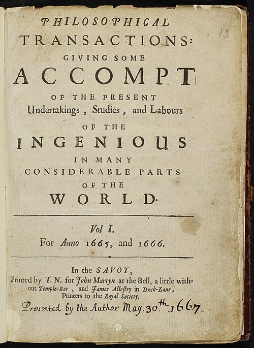
Frontispiece of Volume I of Philosophical Transactions (1665), the world's first peer-reviewed scientific journal, printed for John Martyn, printer to the Royal Society.
[[SRC_MARKER:L5_Source_2]]
Source S3: Robert Hooke's Engraving of a Flea from Micrographia (1665)
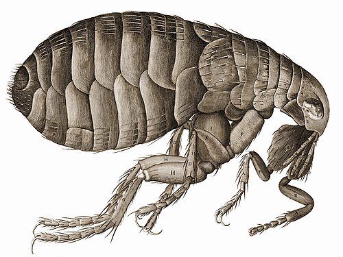
Robert Hooke's famous fold-out engraving of a flea observed under the compound microscope, published by the Royal Society in Micrographia (1665).
[[SRC_MARKER:L5_Source_3]]
Source S4: Renaissance Printing House with Movable Type (16th c.)
A 16th-century workshop showing compositors setting movable metal type and pressmen operating wooden screw presses.
Q1. How did the mechanical nature of the printing press prevent the theological censorship and copyist errors that had protected Galenic dogma for over a thousand years?
[1.1] Throughout the Middle Ages, the communication of medical ideas was severely constricted by the physical limitations of book production and the ideological monopoly of the Catholic Church. Every medical treatise, herbal compendium, and anatomical diagram had to be hand-transcribed by monastic scribes in cathedral scriptoria. This process was exceptionally slow, immensely expensive, and fraught with cumulative human error: copyists frequently misread obscure Latin terms, omitted crucial lines, and distorted hand-drawn illustrations beyond scientific recognition. Furthermore, because monks controlled the production of books, the Church exercised strict doctrinal censorship, suppressing any writing that questioned Galenic orthodoxy or Biblical interpretation while declaring Galen’s teleological treatises infallible sacred truth.
[1.2] In c.1440, the German metalworker Johannes Gutenberg perfected the movable-type printing press (Source A) in Mainz, introducing individual cast-metal letters that could be arranged into pages, inked, and pressed onto paper at high speed. Brought to England by William Caxton in 1476, the printing press revolutionized European intellectual life. For the first time, hundreds of identical copies of a medical work could be produced in weeks rather than years, at a fraction of the cost. Crucially, the press bypassed monastic scriptoria, transferring publishing into the hands of secular scholars, commercial printers, and university faculties.
[2.1] Alongside the mechanical triumph of movable type, the intellectual movement known as Renaissance Humanism fundamentally reshaped medical scholarship. Humanist scholars sought to return to original classical Greek manuscripts (ad fontes), bypassing centuries of medieval Latin translations. By comparing original texts with the Church’s sanctioned copies, scholars made a startling discovery: medieval monk copyists had introduced thousands of translation errors, misunderstandings, and theological distortions into Galen’s and Hippocrates’s works over the preceding millennium. By printing pristine, uncorrupted Greek editions with precise anatomical diagrams, Humanism encouraged physicians across Europe to realize that ancient medical authorities were fallible men rather than divine prophets, sparking an urgent demand to verify classical claims against direct human anatomy and empirical observation.
[3.1] By the mid-17th century, the demand for observable, empirical proof led scholars to reject scholastic disputation in favour of institutional experimentation. In November 1660, a group of twelve natural philosophers—including the architect Christopher Wren, the chemist Robert Boyle, and the polymath Robert Hooke—met at Gresham College in London to establish a formal scientific body. In 1662, King Charles II granted them a prestigious Royal Charter, formally incorporating "The Royal Society of London for Improving Natural Knowledge". The Society adopted the radical Latin motto Nullius in Verba ("Take nobody's word for it"), boldly declaring their refusal to accept any scientific assertion based merely on classical authority, ecclesiastical dogma, or ancient tradition. To replace hearsay, members conducted weekly laboratory demonstrations, establishing repeatable physical experiment as the supreme test of medical and scientific truth.
[[SRC_MARKER:L5_Source_6]]
Source S5: Title Page of Philosophical Transactions, Vol. I (1665–1666)
The frontispiece of Volume I of Philosophical Transactions (1665), the world’s first peer-reviewed scientific journal.
Q2. Notice that this journal was printed for John Martyn, 'Printer to the Royal Society'. How does the creation of Europe's first peer-reviewed scientific journal embody the Royal Society's radical motto Nullius in Verba ('Take nobody's word for it'), and why was publishing verified laboratory methods in print essential for transforming alchemy into modern scientific medicine?
[4.1] In 1665, the Royal Society’s energetic first secretary, Henry Oldenburg, launched Philosophical Transactions (Source B), the world’s first regular, peer-reviewed scientific journal. Prior to this, scientific discoveries had often been kept as guarded personal secrets or circulated in private correspondence between elite scholars. Philosophical Transactions created a public, permanent, and international communications network. Researchers across England, France, Germany, and Italy could submit experimental papers, read detailed methodologies, critique hypotheses, and replicate laboratory procedures in their own workshops. This formal peer-review process democratized scientific research, allowing anatomical and physiological breakthroughs to spread across Europe with unprecedented velocity.
[[SRC_MARKER:L5_Source_7]]
Source S6: Robert Hooke's Engraving of a Flea from Micrographia (1665)
Robert Hooke’s famous fold-out engraving of a magnified flea from Micrographia (1665), published by the Royal Society using the compound microscope.
Q3. What does Hooke’s detailed rendering of an everyday flea reveal about the new scientific priorities of the Royal Society, and why did this visual evidence fail to change medical treatments?
[5.1] The empirical mandate of the Royal Society was demonstrated through optical innovations. In 1665, Royal Society curator Robert Hooke published Micrographia, using the compound microscope to illustrate a magnified flea (Source C) and coin the biological term "cells". In 1676, Antonie van Leeuwenhoek used single-lens microscopes to observe living bacteria in water, which he termed "animalcules". The Royal Society verified and published these observations in Philosophical Transactions, proving that an invisible microscopic world existed.
[5.2] However, despite these dazzling communicative and optical breakthroughs, the Renaissance witnessed a profound historical paradox: revolutionary advances in scientific communication produced virtually zero improvement in everyday medical treatment. Neither Hooke nor Leeuwenhoek understood that their microscopic organisms caused disease; without Germ Theory (not discovered until Pasteur in 1861), bacteria were viewed as harmless curiosities. Furthermore, scientific books were printed in Latin and remained expensive luxury goods, while the general public was illiterate and continued to rely on cheap astrological almanacs, bloodletting, and herbal purges. Consequently, while the printing press and Royal Society dismantled Galen’s intellectual authority among elites, ordinary sick patients in Tudor and Stuart Britain experienced almost total continuity with the medieval world.
Active Tasks
Q4. ‘The creation of the Royal Society was more important than the invention of the printing press in advancing medical ideas in the Renaissance.’ How far do you agree? Explain your answer [16+4 marks].
GCSE Exam Practice
Q5. Explain one way in which ideas about the cause of disease in the Renaissance period (c1500–c1700) were similar to ideas in the Medieval period (c1250–c1500). [4 marks]
Q6. Explain why there were changes in the way ideas about the causes of disease and illness were communicated in the period c1500–c1700. [12 marks]
L2: KT2.2: Thomas Sydenham & The Art of Bedside Observation (1676)[[SRC_MARKER:L6_Start]]
Learning Objectives
Explain why Sydenham rejected scholastic book learning in favour of direct bedside observation.
Analyse how classifying diseases in Observationes Medicae challenged individual humoral theory.
Assess the significance of Cinchona bark (quinine) in demonstrating that specific remedies target specific diseases.
Evaluate Sydenham’s innovative "cool therapy" for smallpox fevers.
Explain why medical treatments remained mostly medieval despite Sydenham’s diagnostic breakthroughs.
While European anatomists dissected corpses in lecture theatres, one London physician stepped out of the university library and into the sickroom. Thomas Sydenham, nicknamed the "English Hippocrates", told young doctors: "You must go to the bedside; there alone you can learn disease." He rejected 1,500 years of astrological charts and complex urine wheels, arguing that illnesses were distinct biological entities with recognizable symptoms—like species of plants in a garden. Yet, even as he proved measles was separate from scarlet fever and prescribed Peruvian tree bark for malaria, Sydenham still bled patients to balance their humours. How could one man be both a revolutionary pioneer and a prisoner of ancient tradition?
Did you know?
- [object Object]
- [object Object]
- [object Object]
Vocabulary Check
The Golden Sentence: Choose TWO terms from the word bank. Write ONE grammatically sophisticated, historically accurate sentence connecting them using a causal conjunction (because, although, or consequently):
English Hippocrates | Observationes Medicae (1676) | Disease Classification | Cinchona Bark | Cooling Regime | Humoural Persistence
Teacher Model / Pupil Sentence:
[[SRC_MARKER:L6_Source_0]]
Source S1: Portrait of Thomas Sydenham by Mary Beale (c1688)
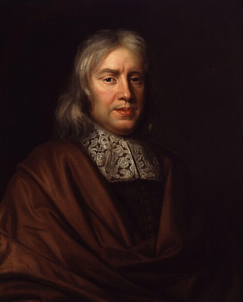
Portrait of Dr Thomas Sydenham painted by his close friend Mary Beale, showing his sober attire and reflective demeanor.
[[SRC_MARKER:L6_Source_1]]
Source S2: The Quack Physician by Jan Steen (1660s)

A 17th-century painting depicting an itinerant quack doctor examining a urine flask and flattering a patient.
[[SRC_MARKER:L6_Source_2]]
Source S3: Renaissance Municipal Hospital Ward
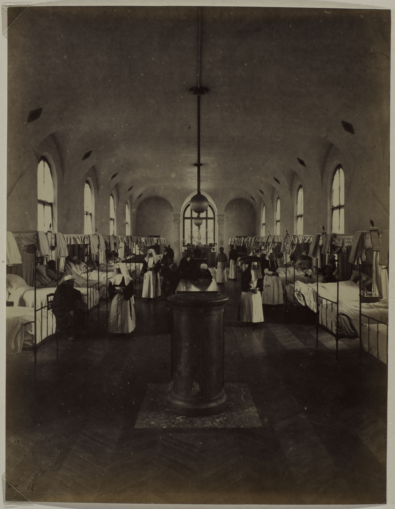
A 17th-century hospital ward showing rows of beds cared for by matrons following the closure of religious monastic infirmaries.
[[SRC_MARKER:L6_Source_3]]
Source S4: Portrait of Thomas Sydenham by Mary Beale (c.1688)

Portrait of Thomas Sydenham by Mary Beale (c.1688), celebrated London physician known as the ‘English Hippocrates’.
Q1. How does Sydenham’s austere portrait reflect his rejection of theatrical university dogma in favour of practical bedside clinical care?
[1.1] In seventeenth-century England, medical scholarship remained largely trapped within theoretical scholasticism. University doctors read Latin translations of Galen, scrutinized urine flasks, and argued endlessly about metaphysical philosophy while rarely interacting with living sufferers. Dr Thomas Sydenham (1624–1689), practicing in London, staged a radical revolt against this academic elitism (Source A). Dubbed the "English Hippocrates", Sydenham insisted that true medical science could never be learned from antique books in a library, but only through empirical observation directly at the patient’s bedside. His famous advice to young physicians was blunt: "Go to the bedside, there alone can you learn disease."
[1.2] Sydenham urged physicians to abandon speculative theoretical disputes and adopt meticulous, objective clinical record-keeping. He spent hours monitoring patients, noting precise changes in pulse rate, skin temperature, sweating patterns, tongue coating, and the progression of rashes day by day. By recording detailed case histories and watching nature take its course, Sydenham sought to understand the true biological lifecycle of illnesses, reviving Hippocratic clinical observation for the early modern era.
[[SRC_MARKER:L6_Source_4]]
Source S5: The Quack Physician by Jan Steen (1660s)
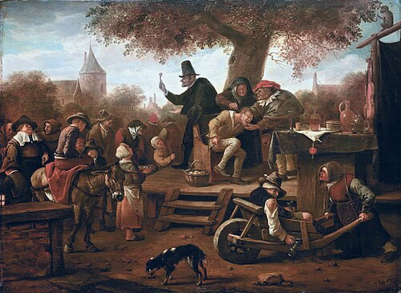
A 17th-century painting by Jan Steen depicting an itinerant quack doctor grandly inspecting a urine flask to deceive a credulous patient.
Q2. Why did Sydenham argue that traditional scholastic doctors who relied on urine flasks were no better than theatrical quacks?
[2.1] In 1676, Sydenham published his masterwork, Observationes Medicae, which served as a foundational medical textbook across Europe for over two centuries. In it, Sydenham advanced a revolutionary hypothesis: diseases could be systematically organized and classified into distinct species, precisely like botanists classify plants and trees. Prior to Sydenham, medieval humoral doctrine taught that every patient had a unique, individual mixture of humours, meaning that a fever in one person was considered fundamentally different from a fever in another.
[2.2] Sydenham demolished this individualized model. He demonstrated that patients suffering from the same disease exhibited identical, predictable symptom patterns regardless of their individual constitution, age, or background. By differentiating between conditions that had previously been lumped together—most famously distinguishing measles from scarlet fever—Sydenham proved that diseases were distinct external pathological entities rather than vague internal fluid imbalances, striking a mortal blow against traditional Galenic diagnosis (Source B).
[3.1] Sydenham’s empirical bedside method bore its most celebrated therapeutic fruit in his championing of Cinchona bark (Peruvian bark) for the treatment of "intermittent fevers" (ague, known today as malaria). Imported from South America by Jesuit missionaries, Cinchona bark was initially viewed with deep suspicion by conservative Protestant English doctors, who dismissed it as a dangerous Catholic concoction. Sydenham tested it rigorously on patients suffering ague in the marshy Thames estuary, carefully calculating dosages and timing administration to coincide with fever remissions.
[3.2] The results were miraculous: the bark (which contained natural quinine) cured malaria directly and rapidly. Crucially, Cinchona bark did not purge the bowels or induce vomiting; it operated as a specific chemical remedy targeting a specific illness. This discovery was conceptually devastating to Galenism. If a single imported tree bark could cure ague without adjusting the Four Humours or bleeding the patient, then the entire Galenic edifice of humoral balance was fundamentally flawed.
[4.1] Sydenham also revolutionized the clinical management of smallpox, one of the deadliest and most disfiguring killers of the seventeenth century. Traditional Galenic physicians treated smallpox fevers by attempting to sweat the poison out of the body: patients were locked in stifling rooms with shuttered windows, roaring hearth fires, and piled under heavy woolen blankets, while being administered heating cordials and wine. This horrific "sweating regimen" caused severe dehydration, accelerated systemic delirium, and dramatically increased patient mortality.
[4.2] Sydenham overturned this centuries-old practice with his famous "cool therapy". He ordered windows opened to allow fresh air to circulate freely through the sickroom, removed heavy blankets in favor of light sheets, extinguished bedchamber fires, and forbade hot cordials, prescribing instead refreshing cold drinks and mild barley waters. While Sydenham could not cure the smallpox virus itself, his cool regimen allowed patients’ immune systems to survive the acute fever crisis, drastically reducing smallpox fatalities and earning him widespread acclaim among grateful London families.
[[SRC_MARKER:L6_Source_7]]
Source S6: Renaissance Municipal Hospital Ward
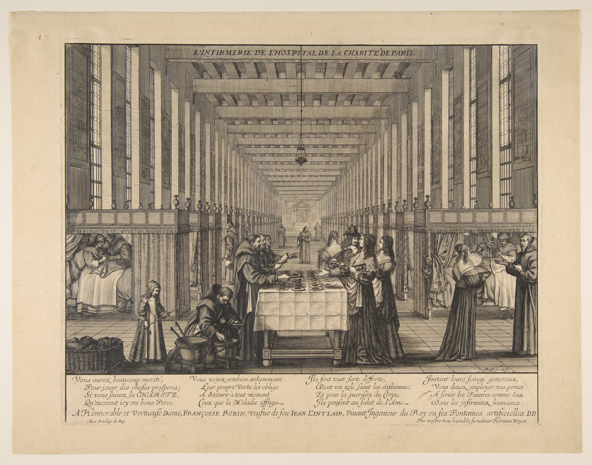
A 17th-century engraving showing an early modern hospital ward with rows of simple beds, reflecting modest clinical care.
Q3. What does the layout of this 17th-century ward suggest about the persistent limits of hospital care despite Sydenham’s diagnostic advances?
[5.1] Despite his profound clinical innovations, Sydenham faced bitter opposition from the medical establishment. Senior fellows of the Royal College of Physicians resented his contempt for scholastic textbook learning, denouncing him as a dangerous rebel whose empirical focus degraded noble academic medicine into a vulgar mechanic trade. Sydenham was never elected a Fellow of the Royal College, remaining a licentiate throughout his life.
[5.2] Furthermore, Sydenham’s breakthrough illustrated the enduring paradox of Renaissance medicine: revolutionary diagnostic observation did not produce revolutionary cures (Source C). Because the microscope was in its infancy and germ theory lay almost two centuries in the future, Sydenham had no understanding of microscopic bacteria or viruses. Consequently, outside of quinine for malaria and cool therapy for smallpox, his therapeutic repertoire remained largely traditional: he continued to prescribe regular bloodletting, mild purges, and iron tonics for gout and fevers. Sydenham transformed how diseases were observed and classified, but left everyday therapeutics fundamentally grounded in the ancient world.
Active Tasks
Q4. ‘Thomas Sydenham’s bedside observation transformed medical practice in the seventeenth century.’ How far do you agree? Explain your answer [16+4 marks].
GCSE Exam Practice
Q5. Explain one way in which Thomas Sydenham's approach to diagnosis was different from medieval physicians. [4 marks]
Q6. Explain why Thomas Sydenham was significant in the development of medicine in Britain. [12 marks]
L3: KT2.3: Andreas Vesalius & The Anatomical Revolution (1543)[[SRC_MARKER:L7_Start]]
Learning Objectives
Explain why a professor dissecting human bodies himself at Padua in 1537 was revolutionary.
Analyse how Vesalius proved Galen had made over 300 anatomical mistakes by dissecting animals instead of humans.
Assess the significance of De Humani Corporis Fabrica (1543) as a masterpiece of Renaissance art and science.
Evaluate how Thomas Geminus’s Compendiosa and English translations brought Vesalian anatomy to ordinary barber-surgeons.
Explain the fierce opposition Vesalius faced and analyse why anatomical breakthroughs produced zero immediate cures.
In 1537, a 23-year-old professor named Andreas Vesalius shocked the University of Padua. For over a thousand years, professors of anatomy sat high above the dissection theatre in an elevated wooden throne called the cathedra, chanting ancient Latin passages from Galen while an illiterate barber-surgeon hacked away at a decaying corpse. If the body disagreed with Galen, professors insisted the body was deformed. Vesalius did the unthinkable: he climbed down from the pulpit, threw off his academic robes, took the dissecting knife into his own hands, and proved that Galen had made over 300 fundamental anatomical errors because he had never dissected a human being. Yet, as Vesalius revealed the true architecture of the human body, doctors remained completely powerless to cure diseases. Was his revolution brilliant, or practically useless?
Did you know?
- [object Object]
- [object Object]
- [object Object]
Vocabulary Check
Conceptual Classification: Categorise the terms from the word bank into the two historical boxes below:
De Fabrica (1543) | Padua Anatomical Theatre | Cathedra | Galenic Errors | Heart Septum | Empirical Anatomy
Power, Governance & Warfare
Economy, Trade & Society
[[SRC_MARKER:L7_Source_0]]
Source S1: Frontispiece of De Humani Corporis Fabrica (1543)
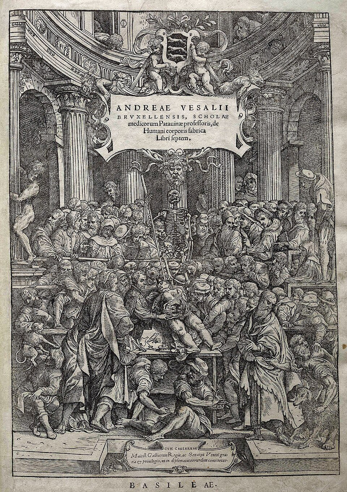
The frontispiece of De Fabrica (1543) showing Vesalius personally dissecting a female cadaver surrounded by students and spectators.
[[SRC_MARKER:L7_Source_1]]
Source S2: Vesalius Muscle Men Plate (1543)
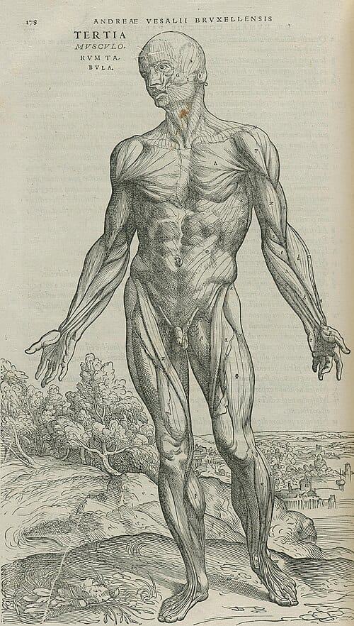
One of the famous "Muscle Men" woodcut plates from Book II of De Fabrica, showing the superficial muscular layer in classical posture.
[[SRC_MARKER:L7_Source_2]]
Source S3: Traditional Phlebotomy Man Diagram
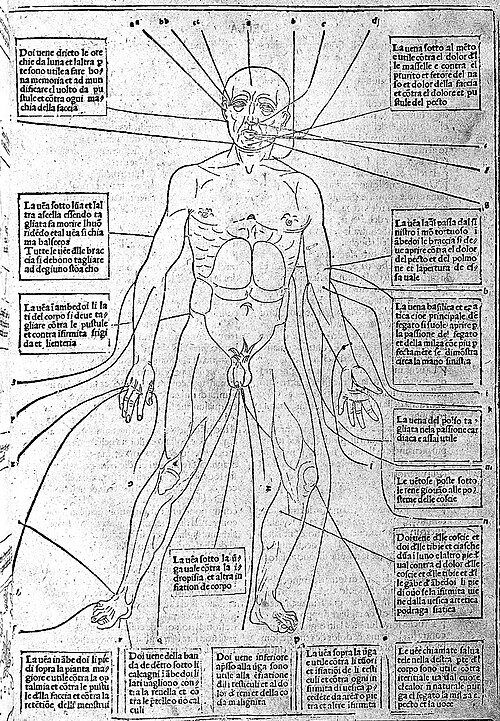
A 16th-century printed bloodletting chart illustrating the enduring reliance on Galenic humoural vein points.
[[SRC_MARKER:L7_Source_3]]
Source S4: Frontispiece of De Humani Corporis Fabrica (1543)
The monumental woodcut frontispiece of De Humani Corporis Fabrica (1543), showing Vesalius dissecting a human body in a crowded amphitheater.
Q1. How does this frontispiece visually symbolize the triumph of direct empirical observation over blind deference to medieval textual authority?
[1.1] In medieval Europe, anatomical dissection was a rare, fossilized academic ritual. In prestigious university faculties, a senior professor (lector) sat aloft in an elevated wooden pulpit, intoning Latin passages from Claudius Galen’s second-century treatises. Far below on the blood-soaked floor, an unlettered barber-surgeon (ostensor) made clumsy incisions into the decaying corpse of an executed felon, merely demonstrating what the ancient text had already declared. If a cadaver’s internal organs visibly contradicted Galen’s descriptions, professors insisted that the body was deformed or that the criminal had lived an unnatural life, never daring to question Galen’s sacred authority.
[1.2] In 1537, a brilliant 23-year-old Flemish doctor, Andreas Vesalius (1514–1564), was appointed Professor of Surgery and Anatomy at the University of Padua in northern Italy. Vesalius shattered academic convention: he climbed down from the pulpit, dismissed the barber-surgeons, and carried out human dissections with his own hands before hundreds of rapt students (Source A). He argued passionately that physicians could never understand the human body through second-hand textual memorization, demanding that empirical dissection of human corpses become the primary foundation of medical education.
[2.1] Through years of hands-on human dissection, Vesalius made a startling discovery that shook European scholarship to its core: Claudius Galen had never dissected a human body in his entire career. Under imperial Roman pagan law, the dissection of human corpses had been strictly outlawed as desecration. Consequently, Galen had dissected Barbary apes, dogs, pigs, and sheep, falsely projecting animal anatomy directly onto the human species. For fourteen centuries, European university doctors had been worshipping the anatomy of apes while believing they were studying humanity.
[2.2] Vesalius systematically compiled a catalog of over three hundred major anatomical errors in Galen’s canonical texts. Among his most famous corrections: he proved that the human lower jawbone is a single solid bone (not two bones fused together as in dogs); the human breastbone (sternum) consists of three parts (not seven segments as in apes); the human liver has two lobes (not five lobes as in pigs); and the human uterus is a simple pear-shaped chamber (not a multi-horned animal organ). Most radically, he investigated the muscular wall (septum) of the heart, proving that it was solid and contained no invisible porous holes for blood to filter through as Galen had claimed.
[[SRC_MARKER:L7_Source_5]]
Source S5: Vesalius Muscle Men Plate (1543)
A famous woodcut from The Fabrica depicting a human figure posed dynamically against an Italian landscape, demonstrating muscular layers.
Q2. Why was combining forensic anatomical accuracy with dynamic Renaissance artistic realism vital for overthrowing Galen?
[3.1] In 1543, at the age of just twenty-eight, Vesalius published his monumental masterpiece in Basel: De Humani Corporis Fabrica ("On the Fabric of the Human Body"). Spanning seven lavishly printed volumes, The Fabrica was a triumph of Renaissance intellectual and artistic synthesis. Benefiting from Gutenberg’s movable metal printing press, the work featured over two hundred intricate woodcut illustrations engraved by master artists from the Venetian workshop of Titian, notably Jan van Calcar (Source B).
[3.2] Unlike crude medieval schematic diagrams, The Fabrica depicted lifelike, muscular human figures posed dynamically against rustic Italian landscapes. The plates systematically peeled back superficial skin to expose deeper layers of skeletal bones, striated muscles, nerves, veins, and internal viscera with breathtaking precision. For the first time in human history, medical students across Europe possessed identical, anatomically accurate visual reference manuals, setting a permanent new standard for biological publishing.
[[SRC_MARKER:L7_Source_6]]
Source S6: Traditional Phlebotomy Man Diagram

A late medieval schematic phlebotomy diagram marking vein sites, showing crude anatomical proportions compared to Vesalius.
Q3. In what ways does comparing Source C with Vesalius’s Muscle Men (Source B) prove that Renaissance anatomy represented a complete break with medieval tradition?
[4.1] Because The Fabrica was a massive, costly Latin folio volume, its initial readership was confined to wealthy continental university professors. However, its radical anatomical discoveries rapidly permeated Tudor England through ingenious publishing adaptations. In 1545, an Italian engraver working in London named Thomas Geminus published Compendiosa Totius Anatomie Delineatio, copying Vesalius’s famous woodcuts onto durable copperplate engravings. Geminus condensed the vast seven volumes into a portable manual designed for practical operating practitioners.
[4.2] Most decisively, in 1553, the English scholar Nicholas Udall translated Geminus’s text into vernacular English. For the first time, ordinary English barber-surgeons and apothecaries—who possessed no Latin education—could read precise descriptions of human muscles, arteries, and bones (Source C). Geminus’s manual became an indispensable standard reference book for London surgeons, dramatically improving practical wound management and surgical confidence on battlefields and in urban workshops.
[5.1] Vesalius’s demolition of Galen provoked furious outrage across conservative medical faculties. Traditionalist physicians in Paris and London condemned him as an arrogant upstart. His former university professor, Jacobus Sylvius, published a vitriolic attack branding Vesalius an "insolent madman" whose dissections were fraudulent, arguing that if human anatomy contradicted Galen, it was because the human body had degenerate and deformed since antiquity rather than Galen being wrong. Exhausted by bitter academic vitriol, Vesalius burned his remaining research notes in disgust, resigned his professorship at Padua, and spent his remaining career as court physician to Holy Roman Emperor Charles V.
[5.2] Most significantly for ordinary patients, Vesalius’s anatomical revolution suffered from a profound practical limitation: knowing the exact structure of the human skeleton and muscles did not cure disease. Vesalius could describe an inflamed appendix or a diseased lung with forensic brilliance, but he could not prevent infection, stop internal hemorrhages, or alleviate fever. Without antiseptics, anaesthetics, or germ theory, everyday treatments remained stubbornly medieval: barber-surgeons still cauterized stumps with boiling oil, and physicians still bled patients according to the Four Humours. Vesalius revolutionized anatomical science, but saved zero lives in his lifetime.
Active Tasks
Q4. ‘Andreas Vesalius’s anatomical dissections were the most significant medical breakthrough of the Renaissance.’ How far do you agree? Explain your answer [16+4 marks].
GCSE Exam Practice
Q5. Explain one way in which methods of investigating the human body in the Renaissance were different from methods in the Medieval period. [4 marks]
Q6. 'Andreas Vesalius’s work on anatomy was the most significant breakthrough in medicine in the period c1500–c1700.' How far do you agree? Explain your answer. [16+4 marks]
L4: KT2.4: William Harvey & The Circulation of the Blood (1628)[[SRC_MARKER:L8_Start]]
Learning Objectives
Explain why Harvey studied cold-blooded animals and Fabricius’s vein valves to analyse the heart.
Demonstrate how mathematical calculations proved Galen’s continuous blood-manufacturing theory was impossible.
Analyse the tourniquet experiment and the publication of De Motu Cordis in 1628.
Explain why conservative physicians fiercely rejected Harvey and ridiculed him as a "circulator".
Assess Marcello Malpighi’s discovery of capillaries (1661) and evaluate why Harvey’s breakthrough saved zero lives.
For 1,400 years, every physician in Europe believed that blood was created in the liver from food, pumped through the body like fuel in a furnace, and completely consumed by the muscles and organs. Then came William Harvey. Inspired by Renaissance mechanical fire pumps, Harvey did something no doctor had ever done: he used mathematics. He calculated that in just one hour, the human heart pumps 540 pints of blood—three times the weight of the entire human body! Where could all that blood possibly come from, and where could it go? Harvey’s answer shook the foundations of medicine: blood does not burn up—it travels in a continuous, one-way circular loop pumped endlessly by the heart. Yet, when he published his discovery, conservative doctors mocked him as a madman, calling him a "circulator" (quack). Why did one of the greatest scientific breakthroughs in human history meet such furious resistance?
Did you know?
- [object Object]
- [object Object]
- [object Object]
Vocabulary Check
Spot the Deliberate Error: Read the statement below. One historical fact or vocabulary concept has been deliberately falsified. Underline the error and explain the accurate historical reality below:
De Motu Cordis (1628) | Mechanical Pump | Vein Valves | Circulator | Capillaries | Blood Volume Calculation
Challenge: Write ONE statement containing a deliberate historical misconception using De Motu Cordis (1628) or Mechanical Pump. Identify and correct the error:
Teacher Model / Historical Correction:
[[SRC_MARKER:L8_Source_0]]
Source S1: Vein Valve Experiments from De Motu Cordis (1628)
The engraved plate from Chapter 13 of De Motu Cordis (1628) showing Harvey’s arm ligature experiments with swollen veins and one-way valves.
[1.1] For fourteen centuries, European medicine operated under Claudius Galen’s complex model of physiology. Galen taught that the human body contained two entirely separate circulatory systems with different functions. Dark venous blood, containing natural spirits, was continuously manufactured in the liver from digested food (chyle) and flowed outwards through veins to nourish body tissues, where it was completely consumed like fuel in a fire. Meanwhile, bright arterial blood, enriched with vital heat and air from the lungs, was pumped through arteries to provide life and movement. Galen insisted that blood seeped between these two systems through invisible pores in the central muscular wall (septum) of the heart.
[1.2] William Harvey (1578–1657) dismantled this ancient dogma. After studying at Cambridge, Harvey traveled to the University of Padua, the leading center of European anatomical research. There, he studied under the master anatomist Hieronymus Fabricius, who had discovered tiny one-way flaps or "valves" inside human veins. While Fabricius believed these valves merely slowed down the outward rush of blood to prevent pooling in the feet, Harvey suspected they had a far more radical mechanical purpose: to ensure that blood could only ever flow in one direction—back toward the heart. Returning to England, Harvey conducted intensive laboratory vivisections on over eighty species of animals, focusing on cold-blooded creatures like frogs, toads, and snakes whose slow heartbeats allowed him to observe cardiac contractions clearly.
[2.1] Influenced by the Renaissance mechanical philosophy of the scientific revolution—which viewed nature as an intricate clockwork mechanism—Harvey reconceptualized the heart not as a mysterious spiritual furnace, but as a mechanical muscular pump. Through meticulous vivisections, he proved that the heart actively contracts during systole, forcing blood out into the arteries, rather than expanding like a sponge to suck blood in as Galen had claimed.
[2.2] Harvey’s most devastating argument against Galen was mathematical. Measuring the internal capacity of the human left ventricle, he calculated that with every heartbeat, approximately two ounces of blood were forced into the aorta. At an average pulse of 72 beats per minute, the heart pumped 540 pints (nearly 300 liters) of blood into the body every single hour—three times the total weight of an average human being! It was physically impossible for the liver to manufacture this astronomical quantity of blood from food, nor could the body consume it. The only logical scientific conclusion was that the blood was not consumed at all: it was the same finite volume of blood circulating continuously in a closed, perpetual loop.
[[SRC_MARKER:L8_Source_3]]
Source S2: Vein Valve Experiments from De Motu Cordis (1628)
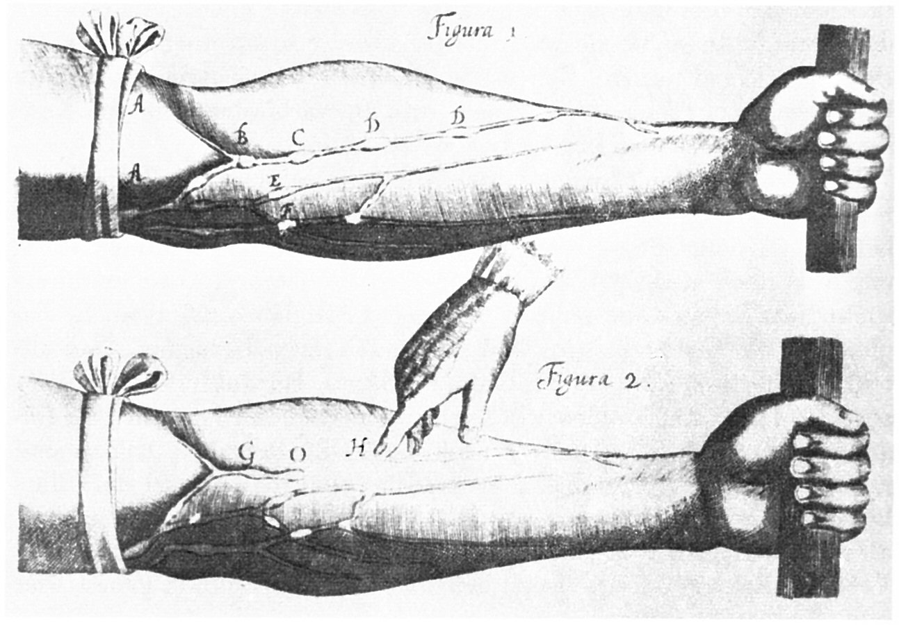
Engraving from De Motu Cordis (1628) showing Harvey’s tourniquet experiment demonstrating that vein valves allow blood to flow only toward the heart.
Q1. How does this simple, repeatable experiment demonstrate the triumph of empirical mechanics over 1,400 years of Galenic theory?
[3.1] To prove that blood circulated in a single direction, Harvey devised a brilliant, elegant experiment using living human volunteers (Source A). He tied a tight ligature (tourniquet) around an arm until the arterial pulse in the wrist ceased and the hand grew pale and cold, proving that blood entered the arm through deep arteries. When he loosened the bandage slightly into a medium tightness, the arteries remained open, but the superficial surface veins were compressed. The veins swelled dramatically, and tiny nodules appeared along their length—the one-way valves discovered by Fabricius.
[3.2] Harvey then used his finger to press and push blood down a vein away from the heart, between two valves. The vein remained completely empty and collapsed; blood refused to flow backwards. As soon as he released the lower finger, blood instantly rushed upwards toward the shoulder. This simple, repeatable physical demonstration proved conclusively that veins carry blood in only one direction: toward the heart. In 1628, Harvey published his complete findings in Frankfurt in his masterpiece, Exercitatio Anatomica de Motu Cordis et Sanguinis in Animalibus ("On the Motion of the Heart and Blood in Animals").
[4.1] Harvey’s discovery met furious resistance from conservative physicians across Europe. Senior doctors refused to believe that Galen had been mistaken for over a millennium. Critics ridiculed Harvey as a "circulator" (a Latin pun meaning an irrational quack who travels in circles), and many of his wealthy private patients abandoned him, fearing his radical, unproven theories would endanger their health.
[4.2] Furthermore, Harvey faced a major scientific gap that his critics ruthlessly exploited: he could not explain how blood passed from the microscopic endings of the arteries into the beginnings of the veins. Harvey theorized that tiny invisible channels must exist in body tissue, but because compound microscopes were in their infancy, he could not physically demonstrate them, leaving a frustrating anatomical gap in his complete circulatory circuit.
[5.1] The missing anatomical link was finally discovered in 1661, four years after Harvey’s death. The Italian anatomist Marcello Malpighi, using newly perfected compound microscopes, examined the thin lung tissue of a living frog. Magnified under curved glass lenses, Malpighi observed delicate, microscopic blood vessels connecting the arterial branches directly to the venous system—the capillaries. Malpighi’s microscopic discovery provided the final physical proof of Harvey’s closed circulatory loop, silencing his remaining critics forever.
[5.2] Yet despite this crowning intellectual victory, Harvey’s discovery had virtually zero immediate impact on everyday medical treatment. Knowing that blood circulated did not cure fevers, heal surgical gangrene, or prevent plague. Early attempts at blood transfusion in England and France killed patients due to ignorance of blood groups, prompting Parliament to ban transfusion by law. Most tragically, despite Harvey proving that the body possessed a finite, precious circulating volume of blood, physicians—including Harvey himself—continued to prescribe aggressive bloodletting using leeches and lancets for another two hundred years. Harvey revolutionized physiology, but saved no lives during the Renaissance.
Active Tasks
Q2. ‘William Harvey’s discovery of the circulation of the blood was a turning point in medicine c1500–c1700.’ How far do you agree? Explain your answer [16+4 marks].
GCSE Exam Practice
Q3. Explain one way in which William Harvey's understanding of the circulatory system was different from Galen's theories. [4 marks]
Q4. Explain why William Harvey's discovery of the circulation of the blood was a turning point in medicine. [12 marks]
L5: KT2.5: Continuity in Treatment & The Great Plague of London (1665)[[SRC_MARKER:L9_Start]]
Learning Objectives
Explain how the 1665 plague broke out and why the rich fled while the poor suffered catastrophic mortality.
Analyse why medical understanding and treatments in 1665 showed almost complete continuity with 1348.
Evaluate municipal government action (Mayor’s Plague Orders, Searchers, and 28-day quarantine).
Explain why the slaughter of 40,000 dogs and 200,000 cats was a disastrous medical mistake.
Assess the demographic impact, night dead-carts, mass pits, and the factors that finally ended the plague.
In the scorching summer of 1665, London became a city of horrors. Over 100,000 people—one in every five citizens—perished as the Great Plague tore through overcrowded parishes. Dead-carts rattled through deserted streets at midnight to the cry of "Bring out your dead!", dumping bodies into mass lime pits. Yet this was the era of the Royal Society, of Vesalius’s anatomy, and of Harvey’s blood circulation. Why did all the brilliant breakthroughs of the Scientific Revolution fail so completely to save London? While civic authorities enforced strict padlocked quarantines with armed watchmen and painted red crosses, doctors remained as utterly helpless as medieval monks in 1348. They prescribed smoking tobacco, strapped plucked chickens to swollen buboes, and slaughtered 200,000 cats and dogs—tragically helping the plague rats multiply. Was the Great Plague a triumph of government organization, or the ultimate proof of Renaissance medical failure?
Did you know?
- [object Object]
- [object Object]
- [object Object]
Vocabulary Check
The Odd One Out: Circle ONE term that does not belong with the others. Explain your reasoning: What historical connection links the other terms, and why is your chosen term different?
Bills of Mortality | Municipal Quarantine | Searchers of the Dead | Plague Doctor Beak | Miasmatic Pomander | Mass Lime Pits
Teacher Model / Pupil Reasoning:
[[SRC_MARKER:L9_Source_0]]
Source S1: Night Burial in a Mass Plague Pit (1665)
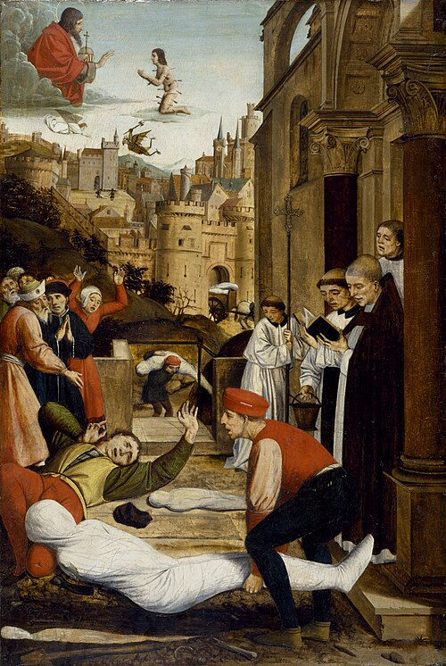
A contemporary woodcut broadsheet showing dead-carts dumping plague victims at night into a mass lime pit.
[[SRC_MARKER:L9_Source_1]]
Source S2: 17th-Century Plague Doctor (Schnabel von Rom)

A 17th-century copperplate engraving of a Plague Doctor wearing an oiled protective robe and herb-stuffed beak mask.
[1.1] In the spring of 1665, after a winter of bitter frost, bubonic plague erupted across London. Beginning in the crowded, impoverished suburban parish of St Giles-in-the-Fields, the epidemic exploded during an unusually hot, dry summer. Within weeks, the death toll escalated from dozens to thousands per week. At its catastrophic peak in September, over 7,000 people were dying every seven days. By the time the epidemic subsided in the winter frost, over 100,000 Londoners—nearly twenty percent of the city’s population—had perished.
[1.2] As panic gripped the capital, King Charles II, Parliament, and wealthy aristocrats fled to the countryside. Most university-educated physicians abandoned their practices and followed the royal court, leaving ordinary citizens to face the nightmare alone. Commerce collapsed, shipping on the River Thames was quarantined, and London became an eerie city of silence, punctuated only by the mourning wails of families and the midnight rumble of dead-carts.
[[SRC_MARKER:L9_Source_3]]
Source S3: 17th-Century Plague Doctor (Schnabel von Rom)
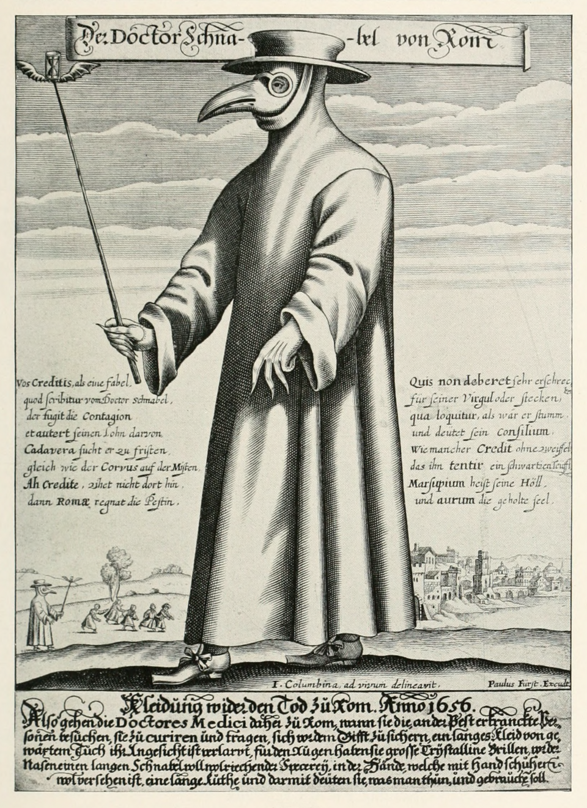
A 17th-century engraving by Paul Fürst depicting a plague doctor wearing a protective leather coat, spectacles, and a bird-like beak mask packed with herbs.
Q1. What does this iconic plague doctor costume reveal about 17th-century beliefs concerning the transmission of epidemic disease?
[2.1] While municipal administration progressed, medical understanding in 1665 showed almost complete continuity with the medieval Black Death. Because the bacterium Yersinia pestis was unknown, physicians and magistrates remained completely ignorant of the true vector: rat fleas. Sickness was still blamed on divine wrath, unfavorable planetary alignments, and foul environmental miasma arising from open gutters and cesspools.
[2.2] Doctors wore protective leather suits and grotesque bird-like beak masks (Source B) packed with dried roses, cloves, and camphor to filter out "pestilential air". Citizens carried sweet-smelling pomanders, held sponges soaked in vinegar to their noses, and burned barrels of pitch in the streets. Schoolboys at Eton were forced to smoke tobacco every morning to ward off contagion. Quack doctors made fortunes selling useless "Plague Water", while folk healers strapped plucked, living chickens or dried toads to swollen buboes to "draw out the poison". One hundred and fifty years of Renaissance anatomical discovery had produced zero change in understanding epidemic causation or effective clinical therapy.
[3.1] Compared to the disorganized, panicked response to the Black Death in 1348, the response of London’s local government in 1665 demonstrated a major advancement in civic public health administration. The Lord Mayor and Court of Aldermen issued strict "Plague Orders". Parishes appointed two female "Searchers of the Dead" to inspect corpses and verify the cause of death. Parishes also published weekly Bills of Mortality, detailing deaths parish by parish to monitor the epidemic’s spread—an early form of statistical epidemiology.
[3.2] The most aggressive municipal policy was compulsory household quarantine. When plague struck a family, the entire house was boarded up and locked for 28 days. A red cross, twelve inches high, was painted on the door beneath the solemn plea: "Lord have mercy upon us". Two watchmen were assigned to every locked home—one by day and one by night—to bring food and prevent anyone from escaping. All public gatherings, theatrical performances, sports, and traditional funeral ceremonies were banned. Sufferers were transferred where possible to dedicated municipal wooden Pest Houses constructed outside the city walls to isolate infection.
[4.1] Believing that domestic animals carried the poisonous miasmatic contagion in their fur, the Lord Mayor ordered the mass extermination of domestic animals. Special animal catchers were employed, leading to the slaughter of over 40,000 domestic dogs and an estimated 200,000 cats across the city’s parishes.
[4.2] This decision proved to be a catastrophic medical error. Slaughtering cats and dogs eliminated the natural predators of the black rat (Rattus rattus). With rodent predators removed, flea-carrying black rats multiplied completely unchecked throughout London’s timbered tenements, accelerating the spread of Yersinia pestis. Meanwhile, city constables burned barrels of pitch and sulfur day and night at street crossings, choking residents in acrid smoke without killing a single flea.
[[SRC_MARKER:L9_Source_6]]
Source S4: Night Burial in a Mass Plague Pit (1665)
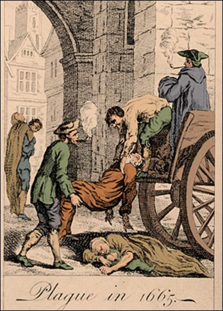
A 17th-century engraving depicting night-cart orderlies dumping shrouded plague corpses into a mass lime trench by torchlight.
Q2. How does this scene of nocturnal mass burial convey the breakdown of normal Christian funeral customs during the Great Plague of 1665?
[5.1] In the climax of the disaster, traditional burials collapsed entirely. Burials were permitted only between sunset and sunrise. Dead-carts rattled through silent, deserted lanes, their drivers ringing handbells and calling into dark alleyways: "Bring out your dead!" Bodies were stripped of valuables and tipped into vast communal trenches excavated at Holywell Mount and Aldgate (Source A), where corpses were stacked five deep and coated with quicklime.
[5.2] The Great Plague was eventually brought to an end not by medical science or doctor’s remedies, but by environmental forces. The bitter frosts of November and December 1665 chilled the capital, killing off the flea population and forcing black rats into dormancy. Ten months later, in September 1666, the catastrophic Great Fire of London incinerated over 13,000 rat-infested timber and thatch slums across the ancient city. Historiographically, 1665 stands as a powerful demonstration of administrative progress alongside profound medical continuity: London’s municipal governance was far more organized than in 1348, yet its doctors were as powerless to cure the biological infection as medieval monks.
Active Tasks
Q3. ‘Responses to the Great Plague of 1665 showed significant change compared to the Black Death of 1348.’ How far do you agree? Explain your answer [16+4 marks].
GCSE Exam Practice
Q4. Explain one way in which approaches to preventing the Great Plague in 1665 were different from approaches to the Black Death in 1348. [4 marks]
Q5. 'Approaches to treating and preventing disease during the Great Plague of 1665 showed almost complete continuity with the Black Death of 1348.' How far do you agree? Explain your answer. [16+4 marks]
Generated: 2026-10-19 15:36:42 UTC | Unit: edexcel_medicine